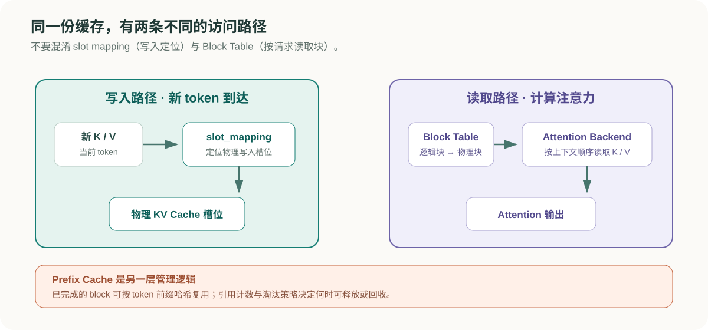

第 04 章 · KV Cache 与内存管理
PagedAttention 下篇：KV Cache 的写入、读取与共享
上一章解释了逻辑块如何映射到物理块。这一章继续追踪真正执行时的两条路径：新 token 的 K/V 应该写进哪个显存槽位？Attention 又如何按请求的上下文顺序读回这些分散的块？
先纠正一个很容易误导源码阅读的地方：旧版 PagedAttention 教程中的 CUDA kernel 讲解，并不等于今天 vLLM 正在运行的完整实现。当前版本由 KV Cache 管理器、Block Table / slot mapping 构建逻辑和多个 Attention backend 协同完成。我们先建立正确的职责划分，再用一个可计算的例子走一遍写入和读取。
读完这一章，你应该能够
- 说清楚 Block Table 与 slot_mapping 的区别，避免把两者当成同一张映射表。
- 根据 token position、block size 和 Block Table 计算物理写入槽位。
- 解释 Attention backend 如何使用 Block Table 读取历史 K/V。
- 理解 V1 Prefix Cache 的整块复用、引用计数和缓存淘汰，而不是把它误说成任意位置的 Copy-on-Write。

4.1 先看当前实现：旧 kernel 教程不等于当前代码
分页 KV Cache 的设计来自 Kwon 等人 2023 年的 PagedAttention 论文：它把每个序列的 KV Cache 切成固定大小的块，用一张逻辑块到物理块的映射表按需分配，从而减少连续预留造成的浪费。当前 vLLM 沿用了这一内存组织方式，但具体代码已经不是论文时代的单一 CUDA kernel。
vLLM 官方的 Paged Attention 设计页面现在明确标注：页面中的逐步 kernel 讲解是历史资料，不能直接代表当前代码。早期实现中的 csrc/attention/attention_kernels.cu 已不再是当前实现路径；现在的分页注意力由不同 Attention backend 负责，使用调度器的 KV Cache 管理器构建的 Block Table。
因此，读源码时不要只盯着一个名为 paged_attention_kernel 的函数。更有效的方式是沿着数据流看四个职责：
- Scheduler：决定本轮有哪些请求、每个请求处理多少 token。
- KV Cache Manager：为请求查找可复用的前缀块，按需分配新块，并在结束或抢占时释放引用。
- BlockTables：把当前调度批次的请求状态整理成 GPU 可用的 Block Table 和 slot mapping。
- Attention backend：把新 K/V 写入指定物理槽位，并按请求的块映射执行注意力计算。
源码版本提醒：下面的文件路径对应 2026-11-20 检查时的 vLLM 主分支结构。主分支会继续变化；如果你在读某个 release，请切换到该 release 对应的 Git tag，再对照相同文件和函数。
4.2 Slot Mapping：新 token 的 K/V 写到哪里？
当模型为本轮 token 算出 Key 和 Value 后，写入算子需要知道目标缓存的物理位置。这个位置由 slot_mapping 提供。它不是“物理位置反查逻辑 token”的表，而是针对本轮实际计算 token 生成的写入目标。
先看一个简化场景：只有一个 KV Cache group，没有 Context Parallelism，Block Table 为 [7, 2, 11, 4]，每个 block 容纳 4 个 token。现在要写入逻辑位置 position = 9。
logical_block = position // block_sizeblock_offset = position % block_sizephysical_block = block_table[logical_block]slot_id = physical_block × block_size + block_offset
position = 9
block_size = 4
block_table = [7, 2, 11, 4]
logical_block = 9 // 4 = 2
block_offset = 9 % 4 = 1
physical_block = block_table[2] = 11
slot_id = 11 × 4 + 1 = 45因此，新 K/V 被写入物理块 11 的第 1 个 token 槽位。示例中的物理 slot ID 45 是按“物理 block ID × block size + 块内偏移”展开的教学表示；具体缓存张量的维度布局由后端决定。
交互观察：从逻辑位置到物理槽位
依次检查地址转换的三个步骤。
9 // 4 = 2。逻辑 token 9 位于逻辑块 2。
BlockTable[2] = 11。逻辑块 2 映射到物理 block 11。
11 × 4 + 1 = 45。最终 slot ID 为 45，即物理 block 11 的 offset 1。
当前源码中，BlockTables.compute_slot_mappings() 会根据请求索引、token positions、Block Table 和各 KV Cache group 的 block size 计算这些写入位置。实际实现还要考虑 padding、无效请求、Context Parallelism 和不同 KV group，因此不能把上面的四行公式当成完整的 Triton kernel。
4.3 Block Table：Attention 从哪里读取历史 K/V？
写入新 token 时要知道“目标槽位”；计算 Attention 时则要知道“这个请求的历史上下文分布在哪些物理块”。这时使用的是 Block Table。
假设一个请求的 Block Table 是 [7, 2, 11]。逻辑上下文按顺序分成三个 block，但物理位置分别是 7、2、11。Attention backend 根据 Block Table、序列长度、query 元数据以及模型的注意力规则，读取需要参与计算的 K/V。
可以用下面的方式记忆两者：
| 对象 | 主要回答 | 典型使用位置 |
|---|---|---|
Block Table | 一个请求的逻辑块对应哪些物理块？ | Attention backend 读取历史上下文 |
slot_mapping | 本轮每个新 token 的 K/V 写到哪个物理槽位？ | KV Cache 写入 / scatter 操作 |
也就是说，Block Table 更像“请求级的目录”，slot mapping 更像“本轮 token 级的写入地址清单”。两者共同服务于分页 KV Cache，但不能互相替代。
另一个重要变化是 Attention backend 的多样性。vLLM 会根据硬件、模型结构和可用实现选择合适的 backend，例如 FlashAttention、FlashInfer 或 Triton 路径。Paged KV Cache 是内存组织方式，不代表所有平台都必须运行同一个名为 PagedAttention 的 CUDA kernel。
4.4 Prefix Cache：复用已计算的完整块，而不是任意位置复制
如果两个请求的开头完全相同，第二个请求就有机会复用第一个请求已经算好的 KV Cache。比如一组请求共享相同的 system prompt 或文档前缀，重复执行这部分 Prefill 就没有必要。
vLLM V1 的 Prefix Cache 采用基于 block hash 的方式。一个 block 的缓存键不仅与该 block 内的 token 有关，也考虑它前面的 prefix；这样同样的局部 token 序列如果出现在不同上下文中，不会被错误地当成同一个缓存块。
复用时，KV Cache 管理器找到已经计算完成的块，并增加其引用计数（ref_cnt），避免该块在仍被请求使用时被当作空闲缓存淘汰。请求结束后，引用减少；只有不再被活动请求占用的缓存块，才可能进入可回收队列。
不要把 V1 Prefix Cache 简化成“任意 token 位置的 Copy-on-Write”。常规命中以完整、对齐的缓存块为单位。新请求复用已缓存的前缀块，随后为自己的新后缀分配所需块。块哈希、引用计数、空闲队列和淘汰策略共同决定生命周期。
还有一个容易忽略的边界：如果请求的输出很长，服务时间主要花在生成新 token 上，前缀缓存只能减少重复 Prefill，不能直接消除 Decode 的计算和历史 K/V 读取。因此，只有工作负载确实存在可复用前缀时，APC 才会带来明显收益。
4.5 Block Size：没有脱离硬件和 backend 的“万能默认值”
Block Size 表示一个 KV Cache block 能容纳多少个 token。块变小，最后一个块未使用的尾部空间通常更少，但同样长度的上下文需要更多块和更多映射项；块变大，块管理元数据相对少一些，但尾部空位可能更多。
真正的可选值还受到模型的 KV Cache 结构、平台、Attention backend 和版本约束。当前配置参考将 block_size 定义为一个连续缓存块容纳的 token 数，并没有要求所有硬件和所有版本使用同一个固定值。
| 考虑因素 | 块较小时 | 块较大时 |
|---|---|---|
| 尾部空间 | 单个请求最后一块的未使用槽位通常更少 | 最后一块可能留下更多未使用槽位 |
| 映射元数据 | 同样 token 数对应更多块，映射项更多 | 同样 token 数对应更少块，映射项更少 |
| 实现约束 | 必须是 backend 支持的 block size | 同样必须满足 backend 与平台约束 |
因此，不要把旧教程中“8 / 16 / 32 一定分别对应某个碎片百分比”或“16 永远是默认值”当作通用结论。应先查正在使用版本的 CacheConfig、启动日志和 backend 支持范围，再用真实工作负载测量。
4.6 串起一次完整执行：分配 → 写入 → 读取 → 释放
- 请求进入调度：Scheduler 决定本轮为请求安排多少新 token。
- 查找可复用前缀：KV Cache Manager 根据请求 token 的 block hashes 查询已缓存块，并在复用时维护引用关系。
- 分配新 block：若本轮需要更多 KV 槽位，管理器从 block pool 中分配；空间不足时，调度器可能需要跳过请求或抢占其他请求。
- 构建 GPU 元数据：BlockTables 生成当前批次的 Block Table 和 slot mapping。
- 写入新 K/V：Attention backend 使用 slot mapping 将本轮新 K/V 写入指定物理槽位。
- 执行 Attention：backend 根据 Block Table 读取当前 query 所需的历史 K/V。
- 结束或抢占：请求结束时释放自己的 block 引用；若块仍被其他请求或缓存索引持有，就不会立即被覆盖。
读源码时可以按这条路径依次查看 vllm/v1/core/sched/scheduler.py、vllm/v1/core/kv_cache_manager.py、vllm/v1/worker/gpu/block_table.py 和 vllm/v1/attention/backends/。这比只从某个 GPU kernel 入手，更容易理解当前系统的边界。
本章自检
- 如果一个 token 位于逻辑位置 9，block size 为 4，Block Table 为
[7, 2, 11, 4]，它的物理 block 和 offset 分别是什么？ - 为什么写入新 K/V 时看 slot mapping，而计算历史 Attention 时看 Block Table？
- 为什么一个已缓存的前缀块不能在仍被其他请求引用时直接回收到空闲池？
- 为什么不能照抄旧版
paged_attention_kernel教程来判断当前 vLLM 的 Attention backend 实现？
下一章把视角从“一个请求的缓存怎么组织”扩展到“很多请求如何一起执行”：Continuous Batching 会在每轮迭代之间动态调整运行集合，但也必须受 token budget 和 KV Cache 容量约束。
参考资料与源码入口
- Kwon et al., Efficient Memory Management for Large Language Model Serving with PagedAttention，SOSP 2023。分页 KV Cache 与 Block Table 思想的原始论文。
- vLLM, Paged Attention。该页面明确说明旧 kernel walkthrough 属于历史资料，并指出当前实现由 Attention backends 处理。
- vLLM, Automatic Prefix Caching Design (V1)。包含 Block、ref_cnt、free queue 和请求块分配流程。
- vLLM, Automatic Prefix Caching Usage Guide。说明启用方式、适用工作负载和性能边界。
- 源码：BlockTables、KVCacheManager、Paged KV helpers、FlashAttention backend。
- vLLM, Cache Configuration Reference。查看 block size 与 KV Cache 配置定义。
本章的 block size = 4、Block Table = [7, 2, 11, 4] 均为教学示例；不是推荐配置或实测结果。